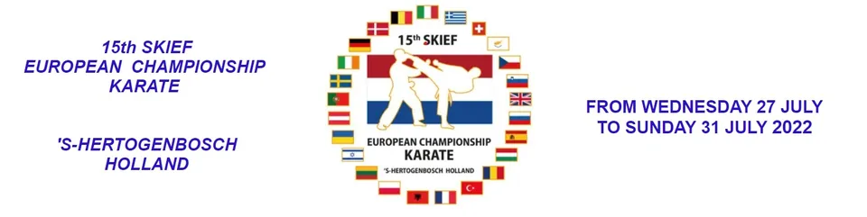
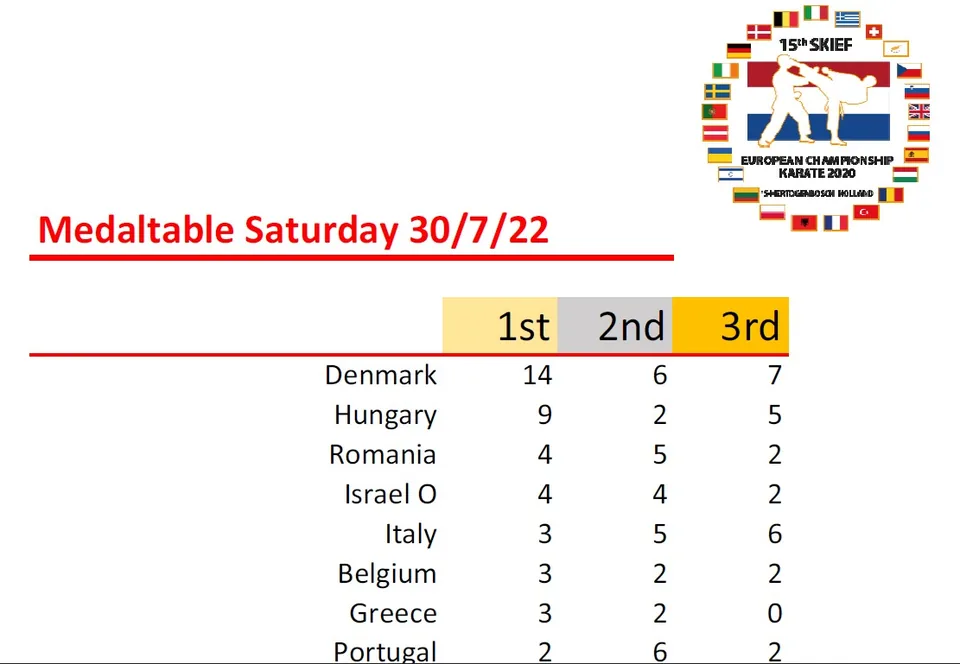

 Participations aux chamionats d’Europe 2022CONGRATULATIONS BELGIUM RANKED 6th in the TOURNAMENT for our categoriesCONGRATULATIONS BELGIUM RANKED 6th in the TOURNAMENT for our categories PhotosVoir l’album